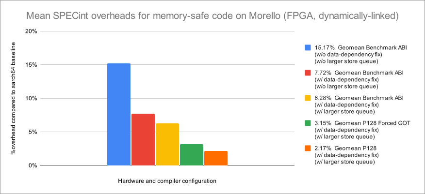

Initial measured performance results on Morello and ABI variations
In this section, we present high-level performance results running SPECint 2006, an industry-standard benchmark suite, on both unmodified and modified Morello microarchitectures, comparing several code-generation models allowing us to analyze the performance of memory-safe CHERI pure-capability code. All measurements were made on a consistently configured FPGA platform that offers strong performance fidelity, and used the 'train' rather than 'ref' workload due to on-FPGA execution times. All Morello configurations operated at a fixed frequency during benchmarks1, with execution time measured in clock cycles for the purposes of calculating overheads. More detailed hardware, toolchain, and software compilation and configuration information, further results from additional configurations, and limitations of this work (including the specific SPECint subset used, compilation choices, implications of using the ‘train’ workload, and why), may be found in Section 3.

Result on unmodified Morello microarchitecture on FPGA
Using an unmodified FPGA implementation of Morello (i.e., based on RTL used for first-generation Morello hardware), and employing software adaptations in the Benchmark ABI that compensate for Morello limitations such as those relating to capability-enabled branch prediction, we were able to achieve a 15.17% geometric mean overhead across the training workload of the SPECint 2006 benchmark suite with "pure capability" (memory-safe) code generation.
Result on improved Morello microarchitecture on FPGA
Using modified FPGA implementations of Morello developed after chip tapeout, to work around a costly microarchitectural data-dependent exception check and store queue pressure, which had been highlighted by performance counter results from dynamic workloads, we were able to achieve 7.72% (solely working around the data-dependent check) and 6.28% (working around both the data-dependent check and increasing the store queue size) geometric mean overheads for the training workload of SPECint 2006 with "pure capability" code generation, with the Benchmark ABI, on incrementally modified Morello designs. Analysis of the exception delivery issue suggests that more recent (post-Neoverse N1) microarchitectures already contain the changed behavior required to enable the data-dependence optimization such that this roughly 50% of the overhead seen on the original Morello design (i.e., without the data-dependency fix) could be decreased or eliminated. Store queue sizes in the original Morello design were not re-tuned in the presence of wider capabilities and were left tuned for baseline aarch64 workloads, but a future optimized design would take such increased pressure into consideration. Expanding the Morello store queues achieves a further roughly 19% reduction in overhead relative to the modified design with the data-dependency fix.
Modeled result using P128 on improved Morello microarchitecture on FPGA
To model future microarchitectural improvements, we utilized modified aarch64 (P128) code generation emulating capability memory overheads by widening pointer memory footprint — the essential cost to the CHERI extensions — while using the baseline A64 architecture, still executing on the Morello microarchitecture. Using this modified compiler and a Morello FPGA implementation with the above microarchitectural improvements, we were able to achieve an estimate of between 2.2% and 3.2% geometric mean overhead for the training workload of SPECint 2006 for "pure capability" code generation on a modified Morello design. This figure is intended to reflect and compensate for microarchitectural effects arising from a lack of optimization in the Morello implementation, such as instruction scheduling limitations, and other related factors, which we continue to investigate using modified Morello designs.
Conclusion from initial measurements
The above 2.2% to 3.2% is our current best estimate of the geometric mean overhead that would be incurred for a future optimized design (though further improvements beyond that may well be possible, including to compiler code generation).
The FPGA setup used in these measurements does not implement thermal throttling.